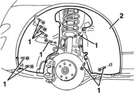

7055B90 Left front WHEEL ARCH LINER - R.R.
- Path
- Procedures > 70 FITTINGS > 7055 MOULDING AND PROTECTION > 7055B exterior protections > 7055B90 Left front WHEEL ARCH LINER - R.R.
- Kind
- repair procedure (removal / refitting; the operation number is the code)
- Applies to
- all engines; all production periods
- Interactive page
- https://sloeber94.github.io/elrnDB-lYpsln/en/#/2429683
Applies to: all engines; all production periods
 Removing
Removing
 Refitting
RefittingPosition the vehicle on a lift and raise it.
1. Undo the bolts fixing the wheel arch liner.
2. Release the wheel arch and remove it.

Applies to: all engines; all production periods
Refitting
RemovingCheck that the wheelarch is undamaged.
Place the wheel arch in position and fasten it using the bolts.
Topics linked from this page (1)
Topics that link to this page (22)
- 1004B10 power unit with manual gearbox - r + r
- 1008A42 gear box left rigid mount - r r
- 1020A20 crank case oil sump - r + r clean seals for sealant application
- 1020D26 flywheel side oil seal cover - r+r
- 1020D38 flywheel side oil seal - replace
- 1024B10 engine flywheel - r + r for versions with manual gearbox
- 1810A20 clutch - r + r
- 1820A24 thrust bearing linkage - r + r
- 1820B20 (Pump) - MASTER CYLINDER R.R.
- 1820B40 FLEXIBLE PIPE from clutch reservoir to (pump) - master cylinder R.R.
- 1820B49 Supply PIPE from (pump) - master cylinder R.R.
- 2110A10 manual gearbox and differential - r + r
- 2110A60 manual gearbox/engine coupling bracket - r+r
- 2110C30 gearbox rear cover - r + r.
- 2710A10 drive shaft with joints (one), l/h or r/h - r + r
- 2710A22 differential and constant velocity joint (one) l/h or r/h - r + r - includes boot replacement
- 3340A26 left front wheel rpm sensor - r r
- 3340A32 front wheel rpm sensors (two) - r r
- 3340A48 wheel rpm sensors (four) - r r
- 3340B55 central brake pipe to lh - r r
- 5050A10 windscreen washer fluid reservoir (in engine bay) - r+r
- 5050B22 front and rear screen washer pump - r+r